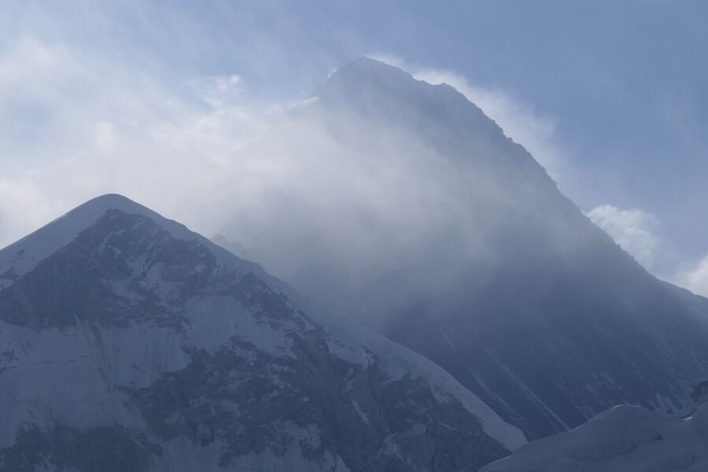
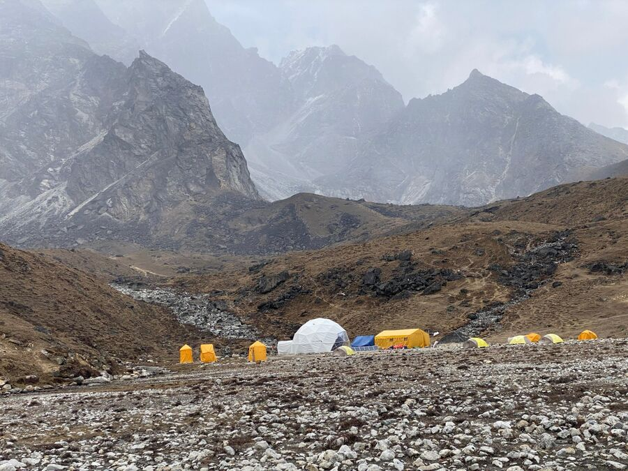
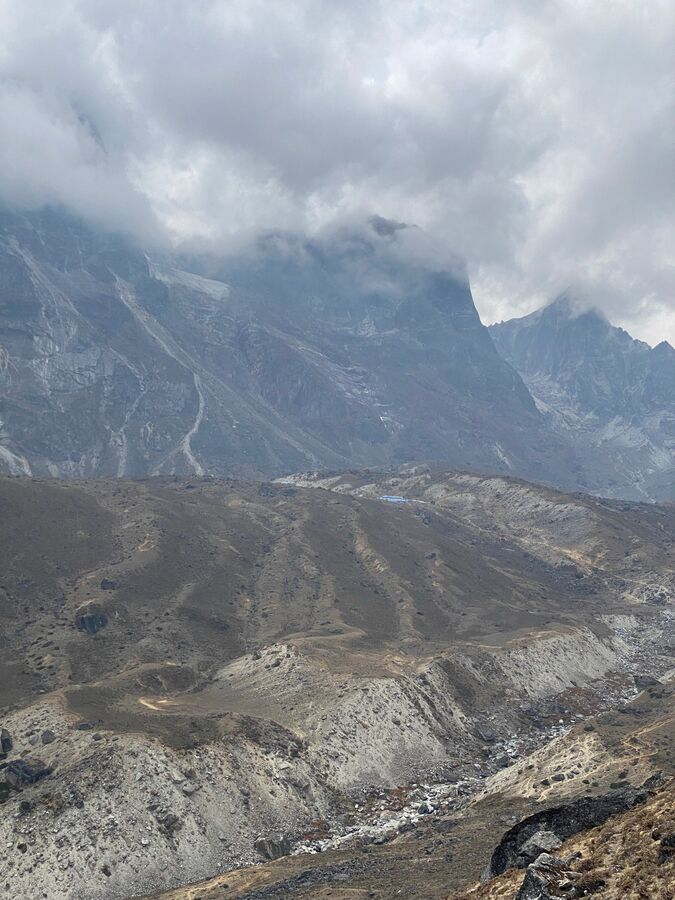
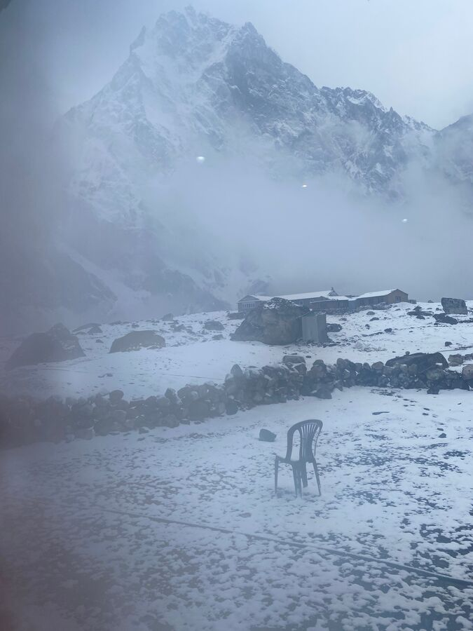

Heute stand alles im Zeichen, den höchsten Punkt unserer Tour zu erreichen: Den Gipfel des Kala Patthar (5.609m). Die meisten Trekker, die das Everest-Basecamp als Ziel haben, besteigen bei dieser Gelegenheit auch den eher unscheinbaren Kala Patthar wegen seiner tollen Aussicht auf die umliegenden Berge, vor allem auch den Mount Everest. Wenn man den Kala Patthar vor dem imposanten Pumori mit seinen 7.161m sieht, fragt man sich, was daran wohl so schwer sein kann. Aber weit gefehlt.
Ich erinnere mich noch aus 2009, dass der Aufstieg alles andere als leicht war. Heute hieß es nun, um 4:30 Uhr aufzustehen, um dann um 5 Uhr mit der Besteigung zu beginnen.
Die Nacht zuvor hatten wir schon wieder kaum geschlafen. Keine guten Voraussetzungen für unser Vorhaben. Aber wir hielten uns natürlich an den Plan und marschierten pünktlich um 5 Uhr auf den Berg zu, der sich in unmittelbarer Nähe zur Lodge befindet. Es wurde langsam hell, im Gegensatz zu September 2009, als wir die Besteigung mit Stirnlampen beginnen mussten, weil es noch dunkel war, obwohl schon 6:30 Uhr.

Um es kurz zu machen: Es war eine einzige Tortur. Die Plastikschläuche unserer Trinkbeutel, die sich im Rucksack befinden, waren eingefroren. Und sie tauten auch die ganze Strecke sich wieder auf. Außerdem war es so kalt, dass wir befürchteten, dass uns die Fingerkuppen abfrieren. Wir gingen daher teilweise ohne Stöcke und behielten die Hände in der Tasche, was das Aufsteigen natürlich schwieriger macht, da man nicht mehr die Muskelkraft der Arme mit einsetzen kann.
Am Anfang geht es 30 Minuten steil im Zickzack nach oben. Da ist man eigentlich schon bedient. Dann kommt ein recht horizontales Teilstück, da schöpft man wieder Hoffnung. Aber dieses wird dann von einem unbarmherzigen Anstieg abgelöst. Und wenn man den Gipfel eigentlich schon zum Greifen nahe hat, bestehen die letzten 40 Meter nur noch aus großen Felsen, die man irgendwie überklettern muss. Wir benötigten insgesamt 2 Stunden für die knapp 450 Höhenmeter.
Auf dem Gipfel des Kala Patthar hat man dann einen wunderbaren Blick auf alle umliegenden Berge und auch solche in der Ferne. Der wichtigste Berg ist natürlich der Mount Everest, der sich ja sonst auf der gesamten Tour eher hinter anderen Bergen versteckt. Hier kann man ihn endlich einmal gut sehen.

Für den nicht minder schwierigen Abstieg benötigen wir noch einmal 1,5 Stunden. Um 8:30 Uhr waren wir völlig erschöpft im Hotel. Wir konnten uns kaum bewegen.
Aber es half alles nichts, wir hatten heute noch eine sehr lange Etappe vor uns, weil wir morgen den ca. 5.400m hohen Cho-La-Pass übersteigen wollen, der sozusagen eine Abkürzung zum Gokyo Ri ist, den wir ebenfalls besteigen werden. Bis dahin war es noch mal 12km. Ehrlich: Zu diesem Zeitpunkt bezweifelte ich, dass wir das schaffen würden.
Wir packten in aller Schnelle unsere Taschen, damit der Träger, sein Name ist übrigens Brem, loslaufen konnte. Dann gab es noch endlich das Frühstück, da wir morgens ohne losgegangen waren. Und danach gingen wir schon wieder los. Da war es 10 Uhr. Wir mussten zunächst die gesamte Strecke (ca. 5km) von Gorak Shep über die Seitenmoräne des Khumbu-Gletschers bis Lobuche zurücklaufen. Nicht nur der Hinweg war anstrengend, sondern auch der Rückweg. Nach 2 Stunden hatten wir es aber geschafft.
In Lobuche gab es ein schnelles Mittagessen, denn der nächste Abschnitt hatte unser Guide mit 3-4 Stunden geschätzt. Nachmittags kippt das Wetter ganz schnell und es kann windig und kalt werden. Es ist also besser, frühestmöglich anzukommen. Um 12:30 Uhr gingen wir also weiter Richtung Dzonglha. Diese Strecke führte uns zunächst entlang des Berg Lobuche, an dem Basecamp für die Lobuche-Expedition vorbei bis in die Höhe des Memorials für die Bergsteiger und Sherpas – nun aber gegenüber auf der Lobuche-Seite.

Der Weg war sehr gut zu laufen. Ein horizontal verlaufender, sandiger Weg, der manchmal nach unten führte, dann wieder nach oben. Plötzlich wurde er immer enger. An einigen Stellen hatte wirklich nur noch ein Fuß Platz. Und es ging mehrer Hundert Meter nach unten, wenn auch nicht sehr steil, aber immer noch steil genug, um sich ordentlich zu verletzen.
Nach rund 2 Stunden sahen wir dann in der Ferne auf einem gegenüberliegenden Berghang unsere heutige Unterkunft in Dzonglha. Und auch den Pass (oben rechts), den es dann morgen zu überqueren gilt.

Gegenüberliegend bedeutet leider auch, dass wir komplett absteigen mussten, um dann auf der anderen Seite wieder hochzusteigen. Das Wetter wurde tatsächlich rauher und es begann zu schneien. Wobei man nicht von Schneien reden kann. Eigentlich schwebten plötzlich viele kleine Schneeflocken in der Luft – so wie bei Game of Thrones, wenn die Weißen Wanderer auftauchen. Die Gegend sieht jedenfalls so aus, man hätte hier gut auch Herr der Ringe drehen können.
Als wir unsere Lodge Zongla Inn um 15:30 Uhr erreichten, waren wir schon 10,5 Stunden auf den Beinen. Die Lodge liegt mit 4.827m genau 20 Meter höher als der höchste Berg (West-)Europas, der Mont Blanc. Immerhin schlafen wir heute rund 400 Meter tiefer als gestern. Hoffentlich hat das positive Auswirkungen auf den Schlaf.
Die kleine Lodge ist anscheinend ausgebucht. Der Gastraum ist proppenvoll. Wir haben dann gegen 18 Uhr gegessen und sind früh zu Bett gegangen, denn morgen wird wieder ein langer Tag und wir müssen um 6:30 Uhr los auf den Pass. Leider hat es noch richtig zu Schneien angefangen.
Gute Nacht.
